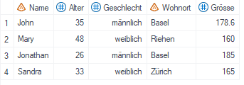
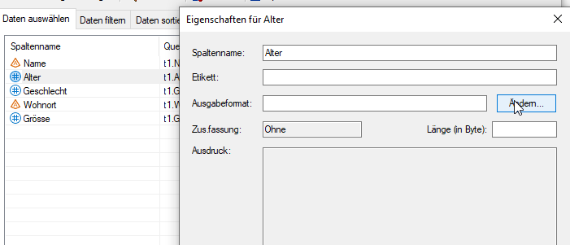
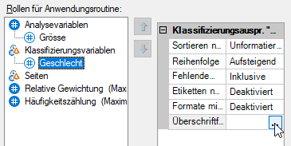

Benutzerdefinierte Formate
Syntax
SAS bietet die Möglichkeit, eigene Formate zu schreiben. Formate werden mittels PROC FORMAT-Statement in folgender Form erstellt:
proc format;
value < Formatname >
[...hier wird das Format definiert...];
run;
Bei der Namensgebung gibt es einige Konventionen zu berücksichtigen:
- Formatnamen dürfen nicht mit einer Zahl enden.
- Bei alphanumerischen Formaten muss der Name mit einem Dollarzeichen ($) beginnen.
- Der Formatname darf nich länger als 32 Zeichen sein.
Hinweis: Innerhalb eines PROC FORMAT können mehrere VALUE-Statements bzw. mehrere Formate definiert werden.
Numerisch oder alphanumerisch
Formate können numerisch oder alphanumerisch sein:
-
Wenn ein Datensatz nur codierte Werte enthält, dann wird ein numerisches Format verwendet, um den Codes eine Bezeichnung zuzuordnen, bspw. bei der Variable Geschlecht den Codes 1 und 2 die Bezeichnungen «männlich» und «weiblich»:
proc format; value fmt_gesl 1="männlich" 2="weiblich"; run;Wird das Format fmt_gesl auf die Variable Geschlecht angewendet ergibt sich folgende Transformation:
→  -
Mit einem alphanumerischen Format werden den Ausprägungen einer Textvariable neue Bezeichnungen zugewiesen, bspw. dem Wohnort der entsprechende Kanton:
proc format; value $fmt_wohnort "Basel","Riehen"="Basel-Stadt" "Zürich"="Zürich"; run;Wird das Format $fmt_wohnort auf die Variable Wohnort angewendet ergibt sich folgende Transformation:
→
Anwenden von benutzerdefinierten Formaten
Es gibt verschiedene Möglichkeiten, die erzeugten Formate einer Variable zuzuweisen:
- Abfrage erstellen: Doppelklick auf die entsprechende Variable -> Ändern -> Benutzerdefiniert


- Zusammenfassungstabelle: Ensprechende Variable anwählen -> Überschriftformat -> Benutzerdefiniert 
-
Programmcode: Formate können direkt in Prozeduren (PROC TABULATE, PROC PRINT, PROC REPORT)...
proc tabulate data=work.person; var groesse; class geschlecht / order=unformatted missing; format Geschlecht fmt_gesl. Wohnort $fmt_wohnort.; table geschlecht, groesse*mean; run;...oder auch in einem DATA STEP verwendet werden.
data person_fmt; set person; format Geschlecht fmt_gesl. Wohnort $fmt_wohnort.; run;
Hinweis: Um das Format im Code zu referenzieren wird der Formatname gefolgt von einem Punkt verwendet.
Gruppieren mittels Format
Mit Formaten kann nicht nur einzelnen Werten eine Bezeichnung zugeordnet werden, es können auch mehrere Werte zu einer Gruppe zusammengefasst werden.
Anwendungsbeispiel: Anhand der Variable Alter sollen Altersgruppen gebildet werden.
proc format;
value fmt_alter
0-19 = "bis 20 Jahre"
20-60 = "20 bis 60 Jahre"
61-high = "über 60 Jahre";
run;
Wichtig: Für gewisse Anwendungen (bspw. Summieren nach Altersgruppe in einer Abfrage) reicht es nicht, der numerischen Variable einfach das Format fmt_alter zuzuweisen, sondern es muss eine neue Variable Altersgruppe generiert werden. Mehr dazu hier.
Sortieren mittels Format
Beim Arbeiten mit Formaten und Auswertungen mittels Zusammenfassungstabelle ist manchmal eine bestimmte Reihenfolge erforderlich, bspw. weil diese für einen tsv-Export benötigt wird. Mit der Option notsorted kann die Reihenfolge aus dem PROC FORMAT-Statement erzwungen werden.
proc format;
value fmt_alter (notsorted)
61-high = "über 60 Jahre"
20-60 = "20 bis 60 Jahre"
0-19 = "bis 20 Jahre";
run;
Damit es mit der Reihenfolge klappt, sind in der Zusammenfassungstabelle einige Einstellungen nötig:
Sortieren nach: HierDateireihenfolgeauswählen.Ettiketten aus Format vorab übernehmen: AufWahrsetzen, damit das Format vor dem Ausführen der Zusammenfassungstabelle geladen wird.Überschriftformat: Hier das entsprechende benutzerdefinierte Format auswählen, in diesem Beispielfmt_alter.
So kann die Anzahl Personen pro Altersgruppe nach Geschlecht bestimmt und das Ergebnis nach absteigender Altersgruppe sortiert werden:
 →
→
Totale und Subtotale mittels Format
Mit Formaten können auch Totale oder Subtotale gebildet werden. In diesem Fall werden den Werten mehrere Labels zugeordnet, weshalb zusätzlich zur Option notsorted auch die Option multilabel verwendet werden muss. Bspw. gehören die 13-Jährigen dann zur Gruppe unter 15 Jahre und Total unter 65 Jahre.
proc format;
value fmt_alter (multilabel notsorted)
0-14 = "unter 15 Jahre"
15-24 ="15 bis 24 Jahre"
25-44 = "25 bis 44 Jahre"
45-64 = "45 bis 64 Jahre"
0-64 = "Total unter 65 Jahre"
65-high = "65 Jahre und mehr"
0-high = "Total";
run;
Zusätzlich zu den im vorherigen Abschnitt beschriebenen Einstellungen muss Folgendes eingestellt werden:
Formate mit mehreren Etiketten: AufAktiviertsetzen.
So können das Subtotal für die unter 65-Jährigen und das Total aller Personen hinzugefügt werden:
→